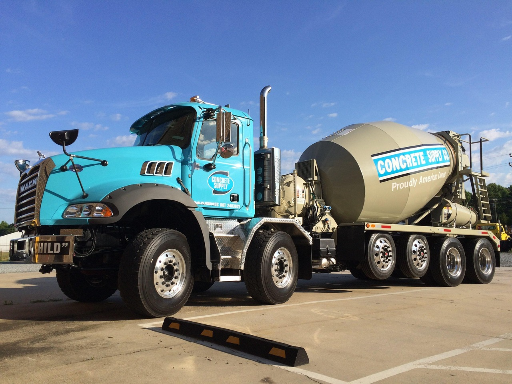

Importance of Concrete at Arizona State University
Concrete plays an essential role in the architecture and sustainability of the ASU Tempe campus. Concrete materials, including structural and decorative types, are utilized all over campus and contribute to the university's experience for students, faculty, and visitors. Many people do not notice the prevalence and importance of concrete in their daily lives at ASU, but learning more about it will allow for a greater appreciation of this versatile material as well as the university and its history.
Concrete Sustainability
Many concrete companies are working towards increasing product sustainability, including reducing carbon emmissions and incorporating recycled materials.
Concrete Safety

Concrete allows ASU to focus on ensuring that all structures meet construction standards to protect students, faculty, and visitors across campus.
Concrete Design

Concrete has various design elements including dyeing, staining, and more that allow concrete to become not only functional but also visually appealing.
FAQ
- Why does concrete matter?
- Concrete supports the infrastructure and sustainability of ASU’s rapidly growing campus.
- Why should I learn more about concrete at ASU?
- Understanding concrete allows you to understand more about innovation, design, and the history of ASU.
- Other Questions?
- Click here to fill out our questions form.